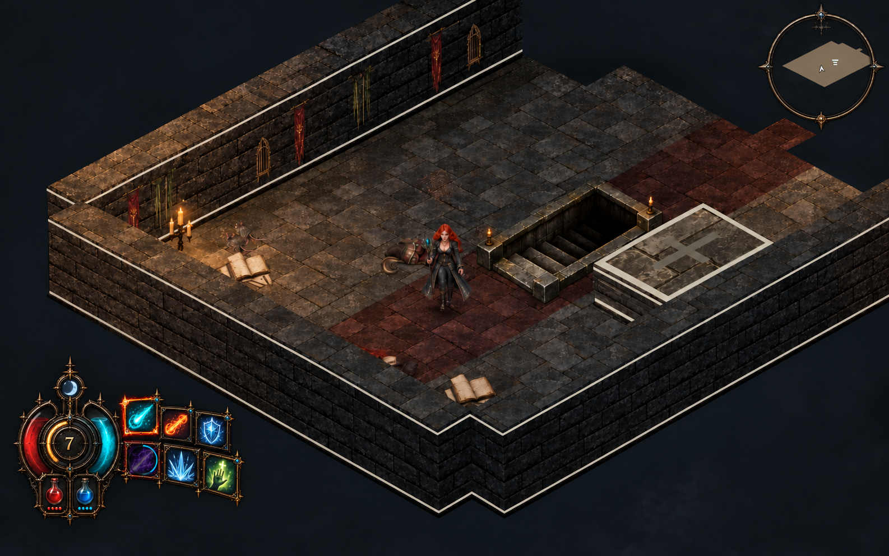
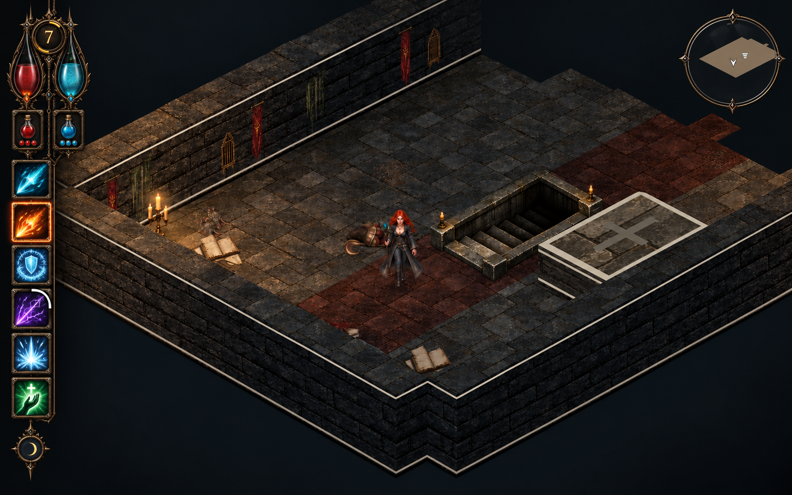
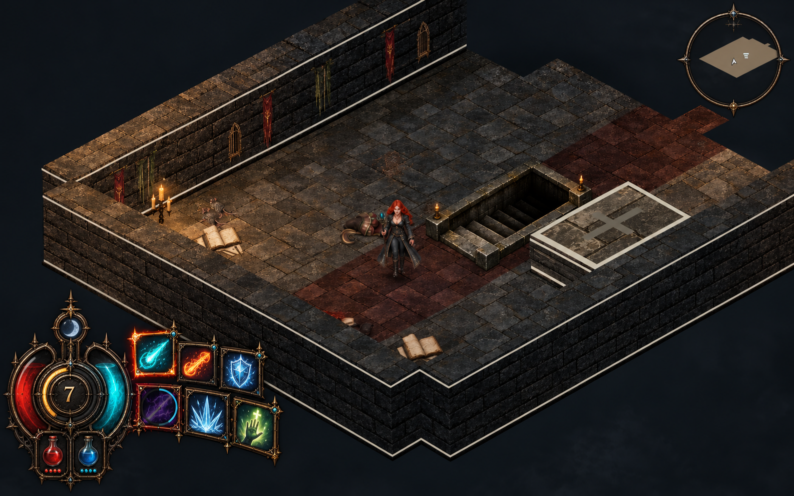
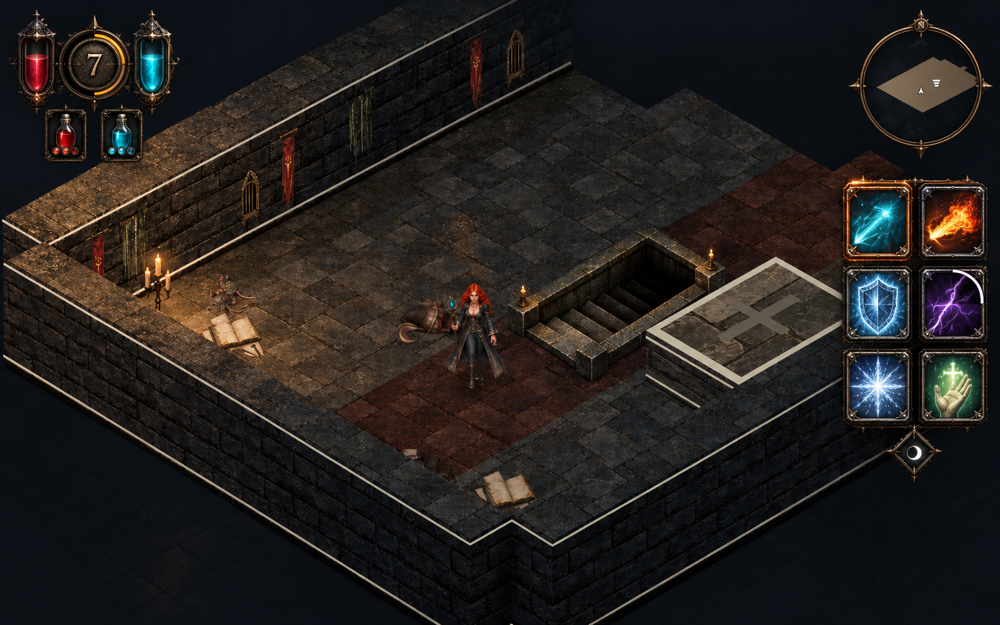

An Ember Remains · HUD concepts
Three illustrated directions, with no traditional bottom bar. Concept artwork only; these have not replaced the playable HUD. Open an image to inspect it at full resolution.
Selected direction · Compact Ember Astrolabe
The preferred B layout refined with a smaller lower-left health/mana medallion and two-tier spell ribbon. Target: roughly 25% smaller linear dimensions while preserving readable icons. This remains a concept mockup.

Red glass: health. Cyan glass: mana. Engraved 7: example player level. Thin gold ring: XP progress. Six tiles: arcane bolt, flame, ice protection, lightning, frost nova, healing. Flask pips show charges; the small moon glyph represents phase.
A · Left Reliquary
A narrow left-side column groups vitals and spells. Leaves the center and bottom clear, with a longer vertical scan between spells.

B · Ember Astrolabe
A compact corner instrument with curved resource gauges and a fan of spell tiles. The most distinctive silhouette; its footprint should be tested near combat at the lower-left edge.

C · Split Seals
Vitals at upper left, spell tiles at right. The entire bottom edge stays open. Recommended for clear spell recognition, with the tradeoff of checking two sides of the screen.

All three include custom surrounds, framed spell icons, resource vessels, XP/level medallions, flask tiles, phase glyphs and minimap surrounds. Final implementation would separate frames, fills, icons and cooldown masks into reusable assets and connect them to gameplay values. Health/mana/XP proportions and level 7 here are illustrative.